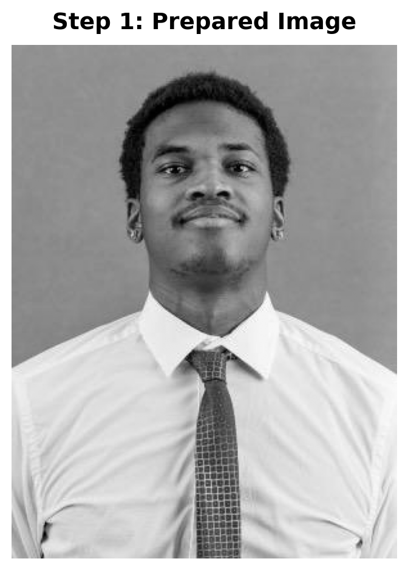
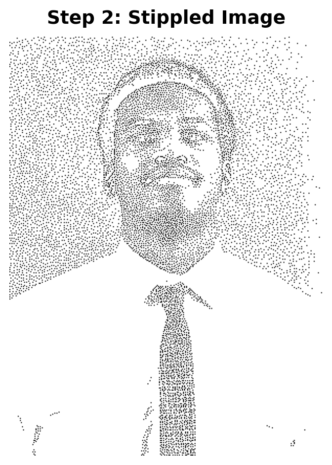
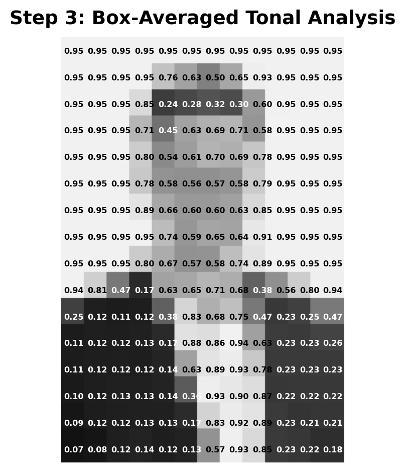
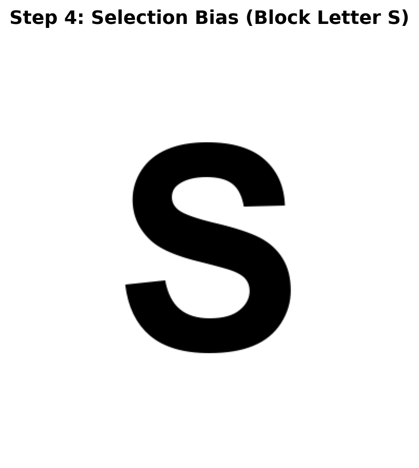

Image size: (400, 300) (no resizing needed)
Final image shape: (400, 300) (should be 2D for grayscale)
Creating a Statistics Meme: Write Your Own Functions
Your Task: Create a four-panel statistics meme demonstrating selection bias. You’ll write three Python functions yourself to complete the workflow, then assemble them into a professional meme.
Deliverables:
step4_create_block_letter.py - Create a block letter “S” matching image dimensionsstep5_create_masked.py - Apply the letter mask to the stippled imagecreate_meme.py - Assemble all components into the four-panel memeindex.qmd file that uses all functions to generate your memeKey Learning: This challenge teaches you to write modular Python functions and assemble them into a complete workflow. You’ll learn to structure code professionally and create a memorable visual representation of selection bias.
Repository Information:
https://[your-username].github.io/selectionBiasChallenge/Selection bias occurs when observed data isn’t representative of the population. Your meme will demonstrate this concept through visual metaphor:
Key Concept: Images are simply matrices—2D arrays where each value represents a pixel (0.0 = black, 1.0 = white). Your stippled image is a matrix with black dots (data points) on a white background. Selection bias removes some of these pixels (data points) in a systematic pattern (the “S”), creating a biased estimate.
Key Insight: When data is missing in a systematic pattern (not random), your estimates become biased. The “S” shape makes it visually obvious that the missing data follows a pattern, just like real selection bias in statistics.
Here’s what your final meme should look like:

Your challenge: Create a similar meme using your own image, with all code hidden in your index.qmd file. The final output should show only the meme image and a brief 1-3 sentence explanation of how it demonstrates selection bias.
Step 1: Fork the starter repository:
https://github.com/[your-username]/selectionBiasChallenge)Step 2: Clone your forked repository locally using Cursor (or VS Code)
Step 3: Set up GitHub Pages:
https://[your-username].github.io/selectionBiasChallenge/Step 4: You’re ready to start! Use the index.qmd file as your starting point.
This challenge is organized into discrete steps. Steps 1-3 are provided for you. You must write Steps 4-6 yourself:
Note: Step 3 is optional but recommended. It helps you understand your image’s brightness distribution and refine the stippling parameters in Step 2 for better results.
This challenge uses a modular design where each step is implemented as a discrete function in a separate file. This structure provides several benefits:
Steps you’ll use (provided): - step1_prepare_image.py: Image loading and preprocessing - step2_create_stipple.py: Blue noise stippling algorithm - step3_create_tonal.py: Tonal analysis (optional)
Steps you’ll write: - step4_create_block_letter.py: Block letter generation ⚠️ - step5_create_masked.py: Mask application ⚠️ - create_meme.py: Final assembly and visualization ⚠️
Supporting functions (provided): - importance_map.py: Computes importance map for stippling - stippling_functions.py: Core stippling algorithm functions
Load an image, convert to grayscale, and resize to appropriate dimensions while maintaining aspect ratio.
Image size: (400, 300) (no resizing needed)
Final image shape: (400, 300) (should be 2D for grayscale)
Generate a blue noise stippling pattern from the prepared image. This creates a pattern of dots that preserves visual information while maintaining good spatial distribution.
Importance map computed
Generating blue noise stippling pattern...
Generated 9600 stipple points
Stipple pattern shape: (400, 300)
Number of stippled points (0.0 values): 9600
Number of background points (1.0 values): 110400
Step 3 is optional but highly recommended! It creates a box-averaged tonal analysis that helps you understand the brightness distribution across your image. Use this information to tune the stippling parameters in Step 2 for better results.
How to use it: - Analyze the tonal distribution to identify key brightness ranges - Adjust extreme_threshold_low and extreme_threshold_high based on your image’s tone distribution - Tune mid_tone_center to match important features (e.g., skin tones around 0.7) - Refine extreme_downweight based on how much you want to reduce stipples in extreme regions
Create a tonal analysis by dividing the image into a grid and computing average brightness in each section. This visualizes the distribution of tones and helps identify which brightness ranges are most important.
Created tonal analysis: grid 16×12
Tonal statistics: mean=0.640, std=0.181
Tone range: [0.143, 0.925]
📊 Tonal Statistics for Parameter Tuning:
Mean brightness: 0.640
Standard deviation: 0.181
Brightness range: [0.143, 0.925]
💡 Tuning Tips:
- If mean < 0.4: Image is dark, consider lowering extreme_threshold_low
- If mean > 0.6: Image is light, consider raising extreme_threshold_high
- If std > 0.2: High contrast, may need stronger extreme_downweight
- Use mid_tone_center around 0.64 to emphasize average tonesdef create_block_letter_s(
height: int,
width: int,
letter: str = "S",
font_size_ratio: float = 0.9,
) -> np.ndarray:
...step4_create_block_letter.py
Task: Create a function create_block_letter_s() that generates a block letter “S” matching your image dimensions.
Requirements: - Function signature: create_block_letter_s(height: int, width: int, letter: str = "S", font_size_ratio: float = 0.9) -> np.ndarray - Returns a 2D numpy array (height × width) with values in [0, 1] - The letter should be black (0.0) on a white background (1.0) - The letter should be centered and scaled appropriately to fit within the image - Use PIL/Pillow’s ImageDraw or similar to render the letter
Hints: - You can use PIL.Image and PIL.ImageDraw to draw text - Try multiple font paths (e.g., system fonts) if one doesn’t work - Make the letter bold and large enough to be clearly visible - The letter represents the “selection bias” pattern in your meme
Your code should go in a file called step4_create_block_letter.py. Once you’ve written it, you’ll use it like this:

step5_create_masked.py
Task: Create a function create_masked_stipple() that applies the block letter mask to the stippled image.
Requirements: - Function signature: create_masked_stipple(stipple_img: np.ndarray, mask_img: np.ndarray, threshold: float = 0.5) -> np.ndarray - Returns a 2D numpy array with the same shape as the input images - Where the mask is dark (below threshold), remove stipples (set to white/1.0) - Where the mask is light (above threshold), keep the stipples as they are - This creates the “biased estimate” by systematically removing data points
Hints: - The mask image has values in [0, 1] where 0.0 = black (mask area) and 1.0 = white (keep area) - Use numpy boolean indexing or np.where() to apply the mask - The threshold determines what counts as “part of the mask”
Your code should go in a file called step5_create_masked.py. Once you’ve written it, you’ll use it like this:
create_meme.py
Task: Create a function create_statistics_meme() that assembles all four panels into a professional-looking meme.
Requirements: - Function signature: create_statistics_meme(original_img: np.ndarray, stipple_img: np.ndarray, block_letter_img: np.ndarray, masked_stipple_img: np.ndarray, output_path: str, dpi: int = 150, background_color: str = "white") -> None - Creates a 1×4 layout (four panels side by side) - Each panel should be labeled: “Reality”, “Your Model”, “Selection Bias”, “Estimate” - Save the result as a PNG file - Make it look professional with good spacing, labels, and layout
Hints: - Use matplotlib’s subplots() or GridSpec to create the layout - Add text labels above or below each panel - Consider adding a border or background color - Use high DPI (150-300) for publication quality - Make sure all images are the same size or handle resizing appropriately
Your code should go in a file called create_meme.py. Once you’ve written it, you’ll use it like this:
To complete this challenge, you must:
step4_create_block_letter.py to generate the block letter “S”step5_create_masked.py to apply the maskcreate_meme.py to assemble the four-panel memeindex.qmd that uses all functions (with code hidden)Important: All code should be hidden (echo: false) in your final index.qmd output. The rendered HTML should show only: - The final meme image - A brief explanation (1-3 sentences) of how it demonstrates selection bias
Here’s a template for your final section:
Your explanation should be 1-3 sentences. Here’s an example:
This meme demonstrates selection bias by showing how systematic missing data patterns distort our understanding of reality. The original image (Reality) represents the true population, while the stippled version (Your Model) shows our data collection. When selection bias removes data points in a systematic “S” pattern, the resulting estimate becomes biased and no longer represents the true population, just as missing data in real-world studies can lead to incorrect conclusions.
.py files as specifiedBy completing this challenge, you’ll have created a memorable visual representation of selection bias that demonstrates how systematic missing data patterns can distort our understanding of reality. The skills you’ve practiced—writing modular Python functions, image processing, and creating professional visualizations—are directly applicable to real-world data analysis projects.
As you work with real datasets, remember the lesson of this meme: when data is missing in a systematic pattern rather than randomly, your estimates become biased. Recognizing and addressing selection bias is crucial for drawing valid conclusions from your data.